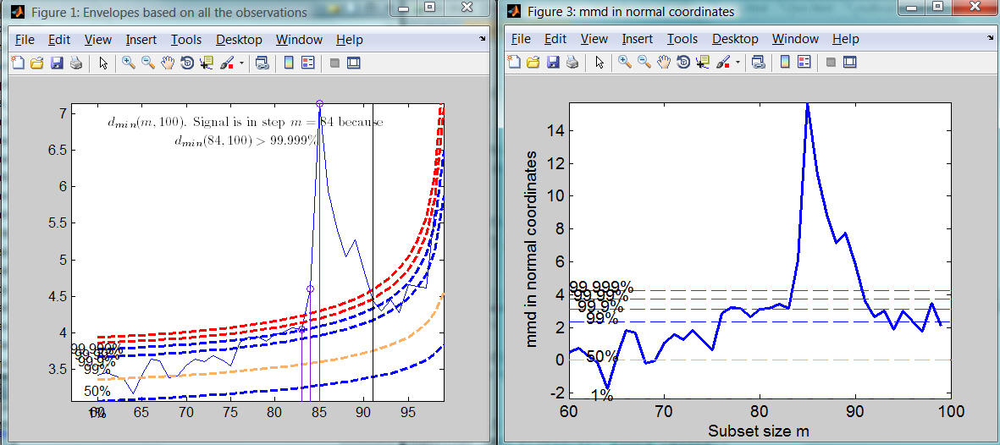

| Forward Search Data Analysis Toolbox™ |
|
| Provide feedback on FSDA toolbox |
Converts values of minimum Mahalanobis distance into confidence levels
[MMDinv]
= FSMinvmmd(mmd,v)
[MMDinv] = FSMinvmmd(mmd,v,param1,val1,param2,val2,...)
[MMDinv] = FSMinvmmd(mmd,v) converts values of minimum Mahalanobis distance into confidence levels. mmd is a n-m0 x 2 matrix containing in the first column the forward search index and in the second column the value of min MD monitored along the search. v is the number of variables of the underlying dataset
[MMDinv] = FSMinvmmd(mmd,v) returns the following information
[MMDinv] = FSMinvmmd(mmd,v,val1,param2,val2,...) specifies one or more of the name/value pairs described in the following table.
| Parameter | Value |
|---|---|
| 'n' |
scalar which specifies the size of the sample. If it is not specified it is set equal to mmd(end,1)+1. |
| 'plots' |
scalar or structure specifying whether it is necessary to
plot in normal coordinates the value of mmd.
|
In this example we compare the monitoring of mmd using original and transformed coordinates for the forged Swiss banknotes
% FORGERY SWISS BANKNOTES
% Example of finding confidence level of mmd
load('swiss_banknotes');
Y=swiss_banknotes.data;
Y=Y(101:200,:);
% The line below shows the plot of mmd
[out]=FSM(Y,'plots',1);
% The line below transforms the values of mmd into observed confidence
% levels and shows the output in a plot in normal coordinates using all
% default options
plots=struct;
plots.conflev=[0.01 0.5 0.99 0.999 0.9999 0.99999];
mmdinv=FSMinvmmd(out.mmd,size(Y,2),'plots',plots);
Comparison of the monitoring of minimum Mahalanobis distance in original coordinates (left panel) and normal coordinates (right panel)

| Provide feedback on FSDA toolbox |
|
|
fsmfan.html | fsmmmd.html |
|